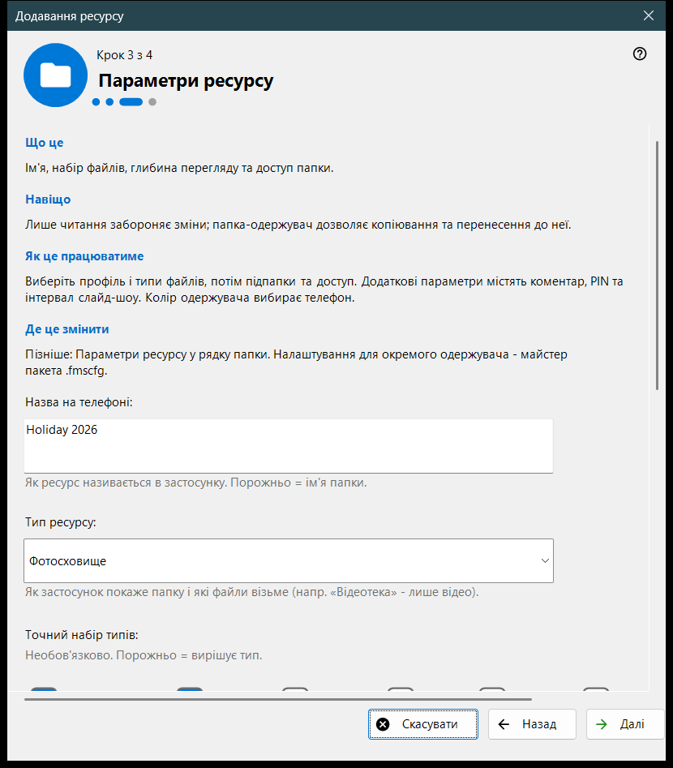
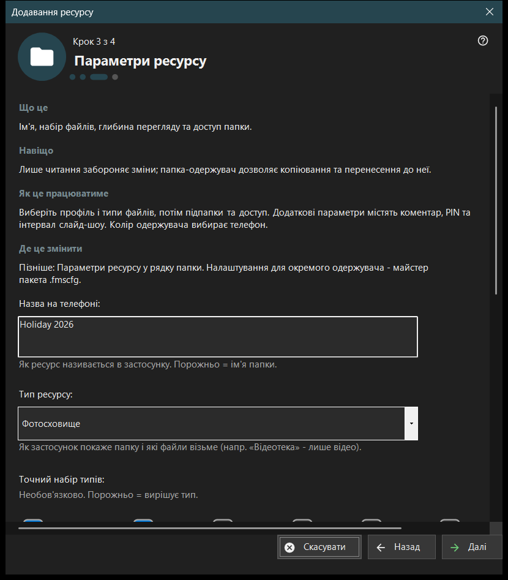

Додавання ресурсу
Призначення
Короткий майстер, що додає один спільний ресурс: папку або вже відкритий диск FileDO. Відкривається з пункту «Майстер додавання ресурсу..» меню «Додати..» і під час першого запуску, а завершується додаванням ресурсу до списку роздачі.


Порядок дій
- Прочитайте, що таке ресурс, і натисніть «Далі».
- Натисніть «Вибрати папку..» і виберіть папку.
- Задайте назву, тип і доступ на сторінці «Параметри ресурсу».
- Перегляньте підсумок і натисніть «Готово».
- Кнопками останньої сторінки покажіть QR-код або відкрийте налаштування.
Елементи вікна
Що таке ресурс
Ресурс - це папка або відкритий віртуальний диск FileDO, до якого переглядач дістається через цей ПК. Файли залишаються на комп'ютері; телефон переглядає й копіює їх через з'єднання, а позначена галочкою папка у списку - це та, що роздається.
Вибір папки
«Вибрати папку..» відкриває звичайний вибір папки, а «Диски FileDO..» показує список відкритих дисків. Папку, що вже є у списку, програма відхиляє з повідомленням «Ця папка вже в списку.». Вибирайте диски FileDO, які вже відкриті; майстер їх не створює й не монтує.
Параметри ресурсу
Назва на телефоні, тип, точний набір медіа, умови сканування та доступ. Режим лише читання забороняє зміни; папка-приймач дозволяє копіювати й переносити до неї файли. «Додаткові параметри» містять коментар, PIN та інтервал слайд-шоу. Колір приймача вибирає телефон.
Ресурс і подальші дії
«Готово» зберігає параметри й додає ресурс; до цього скасування нічого не змінює. Остання сторінка повідомляє, чи роздається ресурс. Якщо сервер вимкнено, телефон його ще не бачить; якщо роздачу не підтверджено, перевірте налаштування. «Показати QR-код» відкриває код доступу, «Налаштування..» - налаштування менеджера, «Закрити» - виходить із майстра.
Налаштування менеджера · Налаштування спільного доступу SFTP · Налаштування сервера обміну